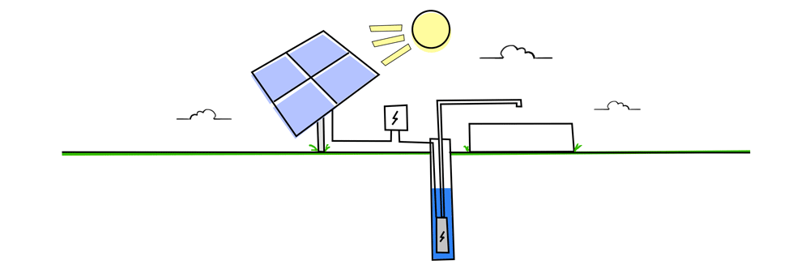

Solar Drip Irrigation
Releated to solar conservation
What do you mean by Drip Irrigation?

Video on drip irrigation
Advantages of drip irrigation:-
Due to the possibility of applying water frequently in low volumes along with fertilizer and causing only partial wetting of soil, this method offers various advantages over the surface and sprinkler irrigation methods. However at the same time, this method involves high level of technology compared to the surface irrigation method and therefore for its successful operation, the method needs to be
used carefully. This section describes the advantage and disadvantages of drip irrigation method along with its adoptability.
Water Savings: In drip irrigation system, the water is not moved over the soil surface or through the air. Therefore the conveyance losses are totally eliminated. As water does not come in contact with the foliage, the interception losses are also eliminated. In addition to this as this method can wet only the desired soil root zone keeping other portion of the soil dry, the losses in application are also reduced. Due to regulated flow and application of water in low volumes, the deep percolation losses are also reduced to a great extent. All these utilities in drip irrigation method make this method to use water efficiently and reduce/eliminate the water losses in the process of conveyance, distribution, application and storage. Therefore this method can save water to the extent of 40 to 60 % without compromising the crop growth.
Improved Plant Growth and Crop Yield: As this method allows the efficient application of water in low volumes frequently, it is possible to maintain the water content in the soil root zone near to the field capacity or within allowable depletion soil moisture. At this level the soil moisture tension is low and the plant need not to exert much to extract water from the soil. Therefore the plants are not subjected to water stress during the entire crop growth period. This also maintains the favorable air and water ratio in the soil root zone and thus improving the plant growth and in the process obtaining the higher crop yield compared to other methods. It has been reported that drip irrigation increases the yield from 10 to 60% depending upon soils and crops over conventional methods of irrigation (INCID, 1994).
Labor & Saving: There is considerable saving in labor, as the well-designed system needs labor only to start or stop the system. This method is also adaptable to automation of low to high level in water and fertilizer application. Therefore the expenses on the manual labourer can be reduced to a great extent.
Energy Saving: Because of high irrigation efficiency, less amount of water is required to be applied and hence less time is required to supply the desired quantity of water and therefore this, method saves energy. In addition to this the low pressure is required to operate the emitters compared to sprinkler irrigation system, therefore there is a need of low horse power pump, further causing the saving in energy.
Suitability to Poor Soils: Very light soils are difficult to irrigate by conventional methods due to deep percolation of water. Like-wise, very heavy soils with low infiltration rates are difficult to irrigate even by sprinkler method. However, drip irrigation has been found successful in both types of soils.
Weed Control: In drip method, due to partial wetting of soil, weed infestation is very less in comparison to other methods of irrigation. This reduces the need of expensive and environmentally hazardous chemicals and laborers for the application of these chemicals.
Economy in Cultural Practices & Operations: Besides achieving effective control of weeds, it also increases the efficiency of other operations like spraying, weeding, harvesting etc. due to the possibility of arranging the geometry of the plantation to suit to these operations. There by reducing the operational costs even upto the extent of 50%.
Use of Brackish/Saline Water: In this method the soil moisture can be maintained at low tension and therefore best suited to the application of brackish/saline water which is otherwise not possible in surface irrigation method due to moisture at high tension because of prolonged interval between two irrigations. As the irrigation requirement of this method is almost reduced by more than 50%, the use of water with salt loads cause the less salt accumulation compared to surface irrigation methods
Enhanced Fertilizer Application Efficiency: In drip irrigation system, water soluble fertilizers can be applied. As water can be precisely applied in the root zone, fertilizer can also be applied in the root zone of the crop only. Therefore the losses of fertilizers in the process of deep percolation, leaching, runoff etc can be considerably eliminated enhancing the saving of precious fertilizer and causing the minimum hazards to the environment reducing the groundwater pollution.
No Soil Erosion: As water is not moved over the land surface, there is no soil erosion due to drip irrigation.
No Land Preparation: Preparation of leveled bed, bund and channels is not necessary as water is not required to move on the land surface. Only land smoothening will suffice.
Minimum Diseases and Pest Problems: In drip system, because of less atmospheric humidity minimum diseases and pest problems are observed.
Adaptability to Application of Mulches: In water scarce region, the mulching has been found very successful for saving water. The drip irrigation method wherein the drippers can be placed below the mulch cover is suitable for the situations where the mulches are required to be used. The drip irrigation method along with the mulching has been found a very formidable option in regions where water shortage is acute.